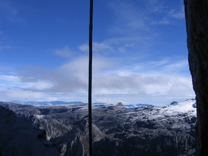
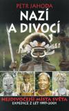
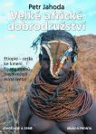
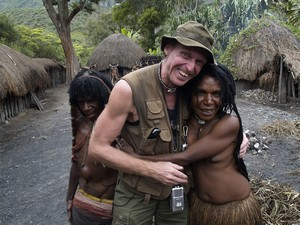

Navigation
- Carstensz Pyramid
- PROGRAMS & SCHEDULE
- Our most imporant expeditions
- LAST CARSTENSZ REFERENCIES
- History of climbing the summit
- Legendary Carstensz climbers
- Seven Summits
- 7 Summits - History
- 7 faces of Carstensz Pyramid
- Photos from climbing
- The nature and flora
- Trekking around Carstensz
- Climbing routes to the summit
- 7summits Carstensz best Base camp
- The Tribes and People
- Climate and weather
- Climbing permits
- How to go
- The Highest Mountain of Papua New Guinea
Why to go with us
- Malaria
- Wrote about us
- References
- Links
- Contact us
- Download


Climb Carstensz Pyramid with us!
(Puncak Jaya) 4884 m (16023 ft)
Localization: West Papua, now named Papua province Indonesia (until Year 2005 named Irian Jaya), island New Guinea, second biggest island in the world.

Climbers morning on Carstensz Pyramid Whal Photo©JahodaPetr.com
Do you think you know anyone, who knows Carstensz better than us?
Read further. If the answer is yes, let us know!
West Papua – Irian Jaya and Papua New Guinea – guided by Petr Jahoda – a climber, photographer, publicist, journalist, and president of Czech Travellers´ Club.
Papua was his most exciting experience – and he has spent more than four years of his life in Papua.
More than 15 years of expeditions and experiences on New Guinea.
Almost 70 expeditions to remote areas.
So far, we haven?t had an unsuccessful expedition. All our expeditions to the Carstensz Pyramid have reached the summit!
Petr Jahoda, our Papua & Carstensz Pyramid guide authored the following books from the „Wildest places in the World“ series.




Petr Jahoda, Papua & Carstensz Pyramid guide, authored four travelogues/ethnographical publications. One of them deals only with Papua, and the other two deal with Papua, and its surrounding area. In recent years he has been spending a large part of the year in Papua. Our guide, Petr Jahoda, speaks English, French, German, Russian, Indonesian and Czech. He also guides in these languages. He has an elementar knowledge of Spanish as well. You can learn more about him at www.jahodapetr.cz. This site contains also a lot of photos, not only from Papua.
Climbing Carstensz Pyramid
Petr Jahoda, our Papua & Carstensz Pyramid guide, was entrusted to organize the climbing of the Carstensz Pyramid by a well known climber Miroslav Caban. Miroslav Caban was the first Czech to finish the Seven Summits project, and second man in history to climb the Mount Everest without artificial oxygen within the Seven Summits project as reported in this article. The first one was Reinhold Messner. Miroslav Caban climbed the Carstensz Pyramid only with the help of our guide Petr Jahoda. It was Caban's last mountain in the Seven Summits project.

Petr Jahoda sitting below Carstensz Photo©Miroslav Caban

Petr Jahoda and Miroslav Caban on the top of Carstensz Pyramid Photo© jahodapetr.cz

Petr Jahoda returns to a Dani village Photo©Miroslav Caban